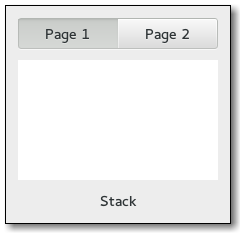

Gtk.Stack¶
Example¶

- Subclasses:
None
Methods¶
- Inherited:
Gtk.Container (35), Gtk.Widget (278), GObject.Object (37), Gtk.Buildable (10)
- Structs:
Gtk.ContainerClass (5), Gtk.WidgetClass (12), GObject.ObjectClass (5)
class |
|
|
|
|
|
|
|
|
|
|
|
|
|
|
|
|
|
|
|
|
|
|
|
|
Virtual Methods¶
Properties¶
- Inherited:
Name |
Type |
Flags |
Short Description |
|---|---|---|---|
r/w/en |
Horizontally homogeneous sizing |
||
r/w/en |
Homogeneous sizing |
||
r/w/en |
Whether or not the size should smoothly change when changing between differently sized children |
||
r/w/en |
The animation duration, in milliseconds |
||
r |
Whether or not the transition is currently running |
||
r/w/en |
The type of animation used to transition |
||
r/w/en |
Vertically homogeneous sizing |
||
r/w/en |
The widget currently visible in the stack |
||
r/w/en |
The name of the widget currently visible in the stack |
Child Properties¶
Name |
Type |
Default |
Flags |
Short Description |
|---|---|---|---|---|
|
r/w |
The icon name of the child page |
||
|
r/w |
The name of the child page |
||
|
r/w |
Whether this page needs attention |
||
|
|
r/w |
The index of the child in the parent |
|
|
r/w |
The title of the child page |
Style Properties¶
- Inherited:
Signals¶
- Inherited:
Fields¶
- Inherited:
Name |
Type |
Access |
Description |
|---|---|---|---|
parent_instance |
r |
Class Details¶
- class Gtk.Stack(**kwargs)¶
- Bases:
- Abstract:
No
- Structure:
The
Gtk.Stackwidget is a container which only shows one of its children at a time. In contrast toGtk.Notebook,Gtk.Stackdoes not provide a means for users to change the visible child. Instead, theGtk.StackSwitcherwidget can be used withGtk.Stackto provide this functionality.Transitions between pages can be animated as slides or fades. This can be controlled with
Gtk.Stack.set_transition_type(). These animations respect theGtk.Settings:gtk-enable-animationssetting.The
Gtk.Stackwidget was added in GTK+ 3.10.- CSS nodes
Gtk.Stackhas a single CSS node named stack.- classmethod new()[source]¶
- Returns:
a new
Gtk.Stack- Return type:
Creates a new
Gtk.Stackcontainer.New in version 3.10.
- add_named(child, name)[source]¶
- Parameters:
child (
Gtk.Widget) – the widget to addname (
str) – the name for child
Adds a child to self. The child is identified by the name.
New in version 3.10.
- add_titled(child, name, title)[source]¶
- Parameters:
child (
Gtk.Widget) – the widget to addname (
str) – the name for childtitle (
str) – a human-readable title for child
Adds a child to self. The child is identified by the name. The title will be used by
Gtk.StackSwitcherto represent child in a tab bar, so it should be short.New in version 3.10.
- get_child_by_name(name)[source]¶
- Parameters:
name (
str) – the name of the child to find- Returns:
the requested child of the
Gtk.Stack- Return type:
Gtk.WidgetorNone
Finds the child of the
Gtk.Stackwith the name given as the argument. ReturnsNoneif there is no child with this name.New in version 3.12.
- get_hhomogeneous()[source]¶
- Returns:
whether self is horizontally homogeneous.
- Return type:
Gets whether self is horizontally homogeneous. See
Gtk.Stack.set_hhomogeneous().New in version 3.16.
- get_homogeneous()[source]¶
- Returns:
whether self is homogeneous.
- Return type:
Gets whether self is homogeneous. See
Gtk.Stack.set_homogeneous().New in version 3.10.
- get_interpolate_size()[source]¶
-
Returns wether the
Gtk.Stackis set up to interpolate between the sizes of children on page switch.New in version 3.18.
- get_transition_duration()[source]¶
- Returns:
the transition duration
- Return type:
Returns the amount of time (in milliseconds) that transitions between pages in self will take.
New in version 3.10.
- get_transition_running()[source]¶
-
Returns whether the self is currently in a transition from one page to another.
New in version 3.12.
- get_transition_type()[source]¶
- Returns:
the current transition type of self
- Return type:
Gets the type of animation that will be used for transitions between pages in self.
New in version 3.10.
- get_vhomogeneous()[source]¶
- Returns:
whether self is vertically homogeneous.
- Return type:
Gets whether self is vertically homogeneous. See
Gtk.Stack.set_vhomogeneous().New in version 3.16.
- get_visible_child()[source]¶
- Returns:
the visible child of the
Gtk.Stack- Return type:
Gtk.WidgetorNone
Gets the currently visible child of self, or
Noneif there are no visible children.New in version 3.10.
- get_visible_child_name()[source]¶
-
Returns the name of the currently visible child of self, or
Noneif there is no visible child.New in version 3.10.
- set_hhomogeneous(hhomogeneous)[source]¶
-
Sets the
Gtk.Stackto be horizontally homogeneous or not. If it is homogeneous, theGtk.Stackwill request the same width for all its children. If it isn’t, the stack may change width when a different child becomes visible.New in version 3.16.
- set_homogeneous(homogeneous)[source]¶
-
Sets the
Gtk.Stackto be homogeneous or not. If it is homogeneous, theGtk.Stackwill request the same size for all its children. If it isn’t, the stack may change size when a different child becomes visible.Since 3.16, homogeneity can be controlled separately for horizontal and vertical size, with the
Gtk.Stack:hhomogeneousandGtk.Stack:vhomogeneous.New in version 3.10.
- set_interpolate_size(interpolate_size)[source]¶
- Parameters:
interpolate_size (
bool) – the new value
Sets whether or not self will interpolate its size when changing the visible child. If the
Gtk.Stack:interpolate-sizeproperty is set toTrue, self will interpolate its size between the current one and the one it’ll take after changing the visible child, according to the set transition duration.New in version 3.18.
- set_transition_duration(duration)[source]¶
- Parameters:
duration (
int) – the new duration, in milliseconds
Sets the duration that transitions between pages in self will take.
New in version 3.10.
- set_transition_type(transition)[source]¶
- Parameters:
transition (
Gtk.StackTransitionType) – the new transition type
Sets the type of animation that will be used for transitions between pages in self. Available types include various kinds of fades and slides.
The transition type can be changed without problems at runtime, so it is possible to change the animation based on the page that is about to become current.
New in version 3.10.
- set_vhomogeneous(vhomogeneous)[source]¶
-
Sets the
Gtk.Stackto be vertically homogeneous or not. If it is homogeneous, theGtk.Stackwill request the same height for all its children. If it isn’t, the stack may change height when a different child becomes visible.New in version 3.16.
- set_visible_child(child)[source]¶
- Parameters:
child (
Gtk.Widget) – a child of self
Makes child the visible child of self.
If child is different from the currently visible child, the transition between the two will be animated with the current transition type of self.
Note that the child widget has to be visible itself (see
Gtk.Widget.show()) in order to become the visible child of self.New in version 3.10.
- set_visible_child_full(name, transition)[source]¶
- Parameters:
name (
str) – the name of the child to make visibletransition (
Gtk.StackTransitionType) – the transition type to use
Makes the child with the given name visible.
Note that the child widget has to be visible itself (see
Gtk.Widget.show()) in order to become the visible child of self.New in version 3.10.
- set_visible_child_name(name)[source]¶
- Parameters:
name (
str) – the name of the child to make visible
Makes the child with the given name visible.
If child is different from the currently visible child, the transition between the two will be animated with the current transition type of self.
Note that the child widget has to be visible itself (see
Gtk.Widget.show()) in order to become the visible child of self.New in version 3.10.
Property Details¶
- Gtk.Stack.props.hhomogeneous¶
- Name:
hhomogeneous- Type:
- Default Value:
- Flags:
Trueif the stack allocates the same width for all children.New in version 3.16.
- Gtk.Stack.props.homogeneous¶
- Name:
homogeneous- Type:
- Default Value:
- Flags:
Homogeneous sizing
- Gtk.Stack.props.interpolate_size¶
- Name:
interpolate-size- Type:
- Default Value:
- Flags:
Whether or not the size should smoothly change when changing between differently sized children
- Gtk.Stack.props.transition_duration¶
- Name:
transition-duration- Type:
- Default Value:
200- Flags:
The animation duration, in milliseconds
- Gtk.Stack.props.transition_running¶
-
Whether or not the transition is currently running
- Gtk.Stack.props.transition_type¶
- Name:
transition-type- Type:
- Default Value:
- Flags:
The type of animation used to transition
- Gtk.Stack.props.vhomogeneous¶
- Name:
vhomogeneous- Type:
- Default Value:
- Flags:
Trueif the stack allocates the same height for all children.New in version 3.16.
- Gtk.Stack.props.visible_child¶
- Name:
visible-child- Type:
- Default Value:
- Flags:
The widget currently visible in the stack